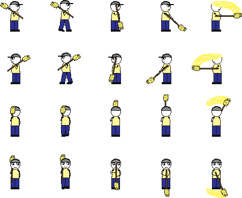
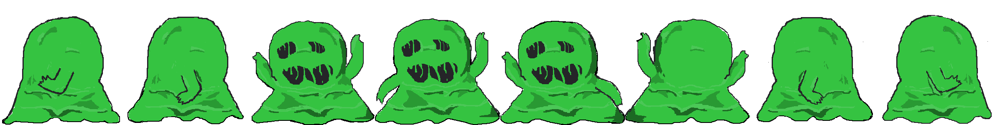

Genre: Puzzle
Platform: Web browser
High Concept: Even in buildings long abandoned, this Janitor never stops doing their job. Fighting both monsters born of filth and the puzzle-like geometry of the building’s floors, the Janitor will always leave the room cleaner than they found it
Gameplay: Push the trash across the level. The trash will keep moving until it hits something else. Monsters also spawn that will both attack you and move the trash blocks around, making the puzzle more difficult. Goal is to get all trash to their respective destinations while avoiding monsters.
Expected ESRB Rating: E
Technical
 Coded on HTML, CSS, and JavaScript using Phaser framework
Coded on HTML, CSS, and JavaScript using Phaser framework
Coded on HTML, CSS, and JavaScript using Phaser framework
Art


Original spritesheets and tilemaps